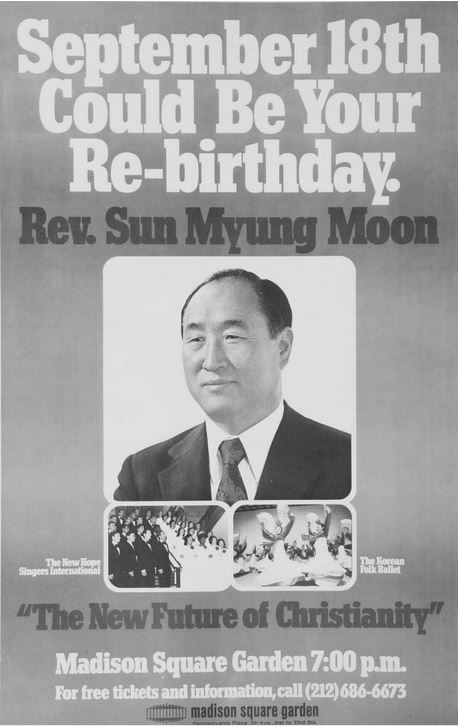
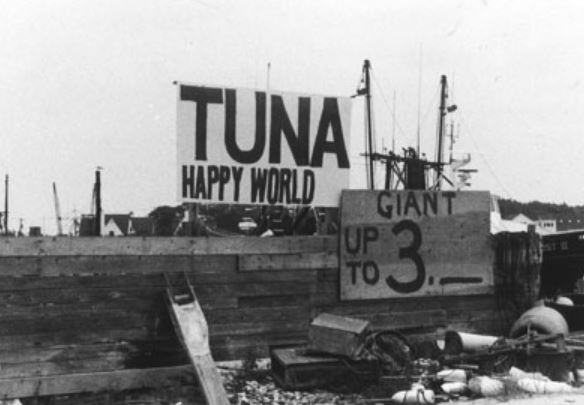

Home
As soon as a person hangs a sign that says “church,” he is making a distinction between church and not church. Taking something that is one and dividing it into two is not right. This was not my dream.
- As a peace loving global citizen, S. M. Moon, p.123
If one were to follow Durkheim's assertion that religion is society, it would become quickly apparent that it has the capacity to interact with any manner of politics, law, economics, or other aspects of societal organization. What makes the Unification Church unique in this respect, however, is both the extent, diversity, and level of organization to which it has interceded in extrareligious matters. Indeed, the Unification Church does not limit its fulfilment of the Divine Principle to realms covered by the WRP, but rather aims to fulfil it in spirit in as many realms as possible.
The Church's hand in industry began in the 1960s as it sought to employ machine tool production and fishing to save itself from impoverishment. Throughout the 70s, the Church further diversified into defense contracting for the South Korean military and real estate. In 1959, the Church expanded to the United States with the arrival of Young Oon Kim ( or “Miss Kim”), an early convert and prominent writer in Oregon. She then moved to Washington D.C. in 1965, where she organized Unification groups across the country. In the 1970s, the Church gained prominence with a following of disillusioned young people, holding a massive rally in 1974 where Moon, speaking through a translator, spoke on the “New Future of Christianity”. To gain traction, the Church produced 80,000 2x3-foot posters of Moon and plastered them over New York.


Through this explicit diffusion of Church thought across a wide array of influential and enriching avenues, the Unification Church demonstrates the capacity of religious idea--be it explicit dogma or views on the sacred and profane--to proliferate all aspects of social life, lending support to its definition as a religion beyond or without the criteria provided by traditional western thought.
The Unification Church furthered its media presence through its support of Nixon in Watergate through a full-paged advertisement in most of the nation's major newspapers. It also funded numerous international conferences, including the International Conferences for the Unity of the Sciences (attended by multiple Nobel laureates) and the Professors World Peace Academy. It also expanded itself into the American fishing industry.
Perhaps most noticeably and influentially was the Church gaining control of The Washington Times in 1982, envisioned as a conservative alternative to The Washington Post. This paper gained the endorsement of Ronald Reagan, who allegedly read it daily. The culmination of the Church's media influence arrived in 1996 with the launch of the Family Federation of World Peace, which included speeches from Gerald Ford, George H.W. Bush, and former President and Nobel Peace Prize winner Oscar Arias of Costa Rica.